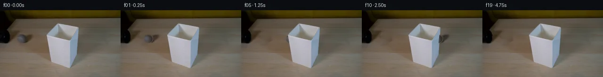

![首帧]()

Round 00
2026-11-05T16:15:12.891137+00:00像素候选变化代码 +124/−0inspection 更新
pixels 3e7d041b2bd92505 · code 832748d53feacb22
查看本轮 generate.py 真实 diff
--- previous/generate.py
+++ current/generate.py
@@ -0,0 +1,124 @@
+"""Local, deterministic source-pixel animation; no external renderer or model."""
+from pathlib import Path
+import json
+import numpy as np
+from PIL import Image, ImageDraw
+import cv2
+from scipy.ndimage import gaussian_filter, map_coordinates
+from artifact_io import save
+
+ROOT = Path(__file__).resolve().parent
+SOURCE = np.array(Image.open(ROOT / 'first_frame.png').convert('RGB'))
+H, W = SOURCE.shape[:2]
+Y, X = np.mgrid[:H, :W].astype(np.float32)
+CX, CY = 46.5, 61.3
+RX, RY = 9.65, 9.3
+SPEED = 46.0
+
+# Repair just the ball and its upper-right shadow using local table colors.
+# Both interpolation and filtering are ordinary pixel operations.
+ball_r = np.sqrt(((X-CX)/RX)**2 + ((Y-CY)/RY)**2)
+repair = np.zeros((H,W), np.uint8)
+cv2.ellipse(repair, (47,62), (13,12), 0, 0, 360, 255, -1)
+cv2.ellipse(repair, (59,57), (19,8), -27, 0, 360, 255, -1)
+repaired = cv2.inpaint(SOURCE, repair, 5, cv2.INPAINT_NS).astype(np.float32)
+# A tiny feather removes a hard repair perimeter while preserving unchanged pixels.
+blend = np.clip(gaussian_filter(repair.astype(np.float32)/255, .8)*1.8,0,1)
+base = SOURCE.astype(np.float32)*(1-blend[...,None])+repaired*blend[...,None]
+
+# Lampshade footprint in the photograph. Its source pixels stay in front of
+# the travel lane. An antialiased polygon follows the actual exterior edges.
+scale=4
+occ_im=Image.new('L',(W*scale,H*scale),0)
+poly=[(99,54),(121,29),(166,37),(160,97),(148,125),(108,111)]
+ImageDraw.Draw(occ_im).polygon([(round(x*scale),round(y*scale)) for x,y in poly],fill=255)
+occ=np.array(occ_im.resize((W,H),Image.Resampling.LANCZOS),dtype=np.float32)/255
+occ[occ<.01]=0
+occ[occ>.99]=1
+
+# Isolate the source shadow as a multiplicative table-darkening field.
+# The ball's center is excluded; its contact shadow survives at the bottom.
+alpha_src = np.clip((1.035-ball_r)/.115,0,1)
+ratio=np.clip(SOURCE.astype(np.float32)/(base+1e-4),.28,1)
+shadow=np.minimum(np.mean(ratio,axis=-1),1)
+shadow=1-(1-shadow)*np.clip((ball_r-1.005)/.14,0,1)
+shadow=1-(1-shadow)*blend
+shadow=gaussian_filter(shadow,.28)
+
+# Fixed photographic illumination and rolling material detail are separated.
+# Inverse sphere rotation transports observed small texture/seam details while
+# keeping the source ball's illumination and projected shape stationary.
+source_float=SOURCE.astype(np.float32)
+illum=gaussian_filter(source_float,(1.5,1.5,0))
+detail=source_float-illum
+inside=np.clip((.99-ball_r)/.18,0,1)
+detail*=inside[...,None]
+
+def sample(arr, ys, xs, cval=0):
+ if arr.ndim==2:
+ return map_coordinates(arr,[ys,xs],order=1,mode='constant',cval=cval)
+ return np.stack([map_coordinates(arr[:,:,c],[ys,xs],order=1,mode='nearest') for c in range(3)],axis=-1)
+
+def render(n):
+ if n==0:
+ return SOURCE.copy()
+ dx=SPEED*n/4
+ center=CX+dx
+ # Entire shadow is transported using subpixel interpolation.
+ sh=sample(shadow,Y,X-dx,cval=1)
+ result=base*sh[...,None]
+ ux=(X-center)/RX
+ uy=(Y-CY)/RY
+ radius=np.sqrt(ux*ux+uy*uy)
+ alpha=np.clip((1.035-radius)/.115,0,1)
+ nz=np.sqrt(np.maximum(0,1-ux*ux-uy*uy))
+ # Projected roll axis is screen-vertical. Each step rotates by distance/radius.
+ theta=dx/RX
+ tx=ux*np.cos(theta)-nz*np.sin(theta)
+ tz=ux*np.sin(theta)+nz*np.cos(theta)
+ # Mirror the measured hemisphere for unseen material; grey fuzz has no logo.
+ material_x=np.where(tz>=0,tx,-tx)
+ rolling_detail=sample(detail,CY+uy*RY,CX+material_x*RX)
+ light=sample(illum,Y,X-dx)
+ ball=np.clip(light+rolling_detail,0,255)
+ result=result*(1-alpha[...,None])+ball*alpha[...,None]
+ # Composite the source shade last so the ball cannot paint over its faces.
+ result=result*(1-occ[...,None])+source_float*occ[...,None]
+ # Outside all actual edits, keep the input bit-for-bit stable.
… diff truncated; 37 more lines …